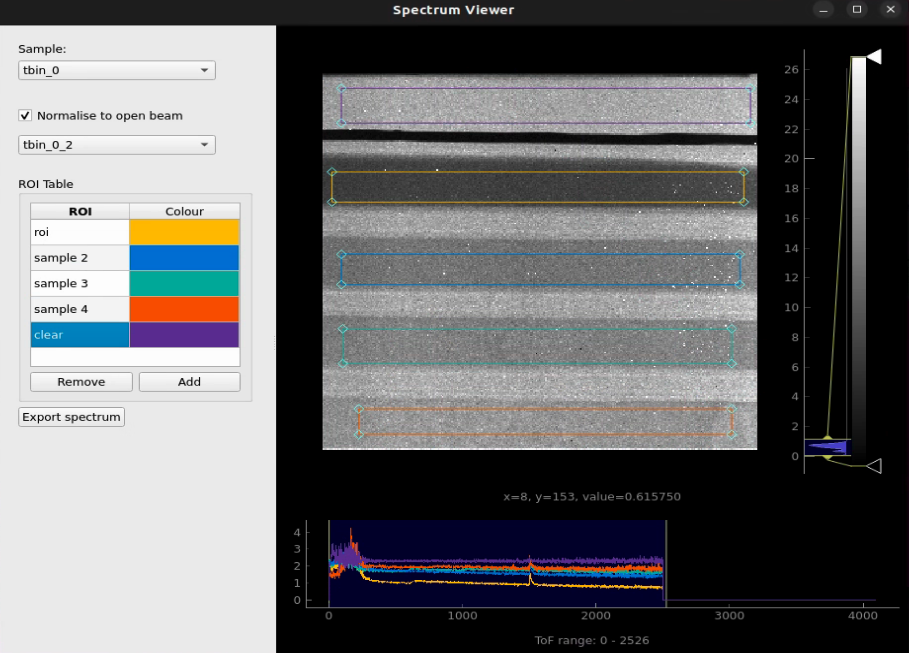

Spectrum Viewer¶
Mantid Imaging offers a spectrum viewer where users can select many regions of interest (ROI) for time of flight (TOF) data and view the spectrum of each ROI. The spectrum viewer can be used to export the spectrum of each ROI and its respective coordinates to a separate csv file.
The spectrum viewer can be accessed from the main menu under “Workflow” > “Spectrum Viewer”.
To try out the spectrum viewer, you find a basic example workflow to follow within quick start
{kind=link}
Above you can see that the spectrum viewer consists of a left hand side panel and a right hand side panel. The left hand side panel contains the ROI selection tools and the right hand side panel contains the spectrum plot.
Similar to the image view image_view, the spectrum viewer has a histogram view to the right of the sample image to control the brightness and contrast of the displayed image. To read more about the histogram view see image_view .
Below the sample image is the spectrum line plot, which shows the intensity of each ROI as a function of the TOF value. You can select the TOF range to be displayed by clicking and dragging the mouse over the vertical bars on the left and right of the plot.
ROIs¶
Using the ROI selection tools, you can add, rename and remove many ROIs to the spectrum viewer and view the spectrum of each ROI. When you are happy with the ROIs you have created and positioned over the sample image, you can export the spectrum of each ROI and its respective coordinates to a separate csv file using the “Export spectrum” button.